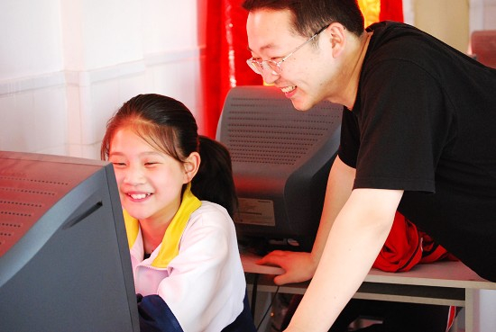
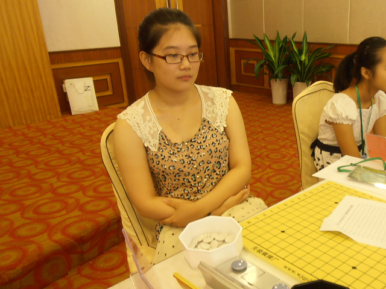
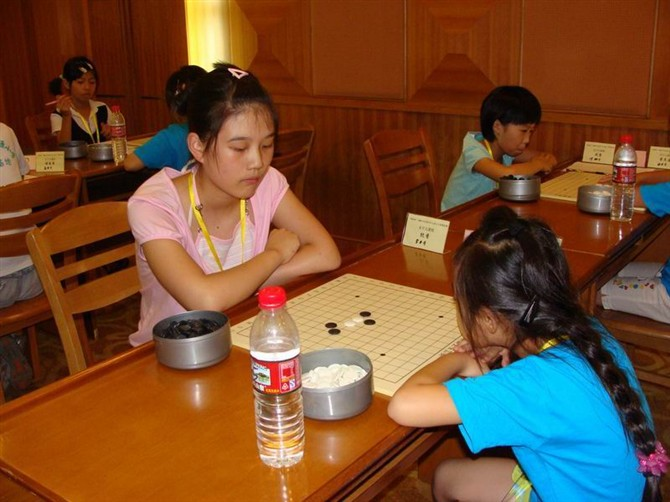
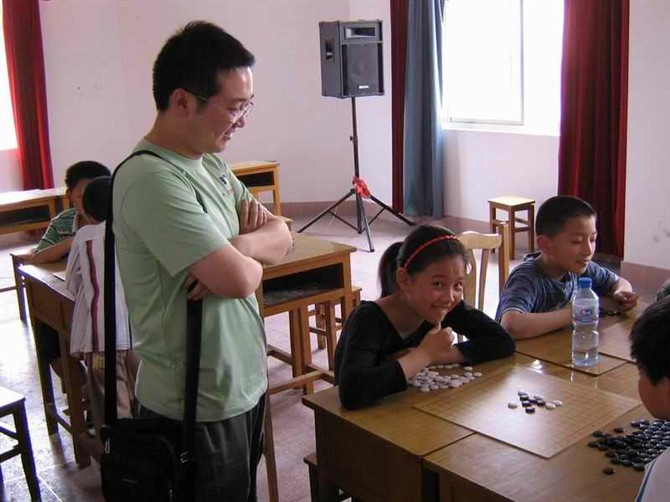

（2007年刚刚学棋的纪香）

（2013年全少赛上的纪香）
]


姓 名：纪香
性 别：女
学棋时间：2007年
战 绩：
2007年6月港闸区第1届中小学生五子棋比赛团体赛第1名
2008年5月港闸区第2届中小学生五子棋比赛团体赛第2名、
2008年5月港闸区第2届中小学生五子棋比赛个人赛第7名
2009年5月港闸区第3届中小学生五子棋比赛团体赛第1名、
2009年5月港闸区第3届中小学生五子棋比赛个人赛第3名
2009年7月南通市首届小学生五子棋比赛团体第1名
2009年8月全国第2届少年儿童五子棋锦标赛儿童女子组第1名
2009年8月全国第2届少年儿童五子棋锦标赛代表港闸区获得儿童组团体第2名
2010年5月南通市首届中小学生智力运动会少年女子组第1名
2010年5月南通市首届中小学生智力运动会团体第2名
2010年8月全国第3届少年儿童五子棋锦标赛少年女子组第3名
2011年7月全国第4届少年儿童五子棋锦标赛少年女子组第2名
2013年7月全国第6届少年儿童五子棋锦标赛少年女子甲组第4名
段(级)位：2007年8月由中国棋院授予二级棋手称号
2009年8月由中国棋院授予二段棋手称号
最大的亮点: 江苏南通港闸区首个少儿五子棋冠军
最大的遗憾：至今没有拿到过区个人赛第一名。
［此帖子已被 黄药师 在 2013-8-5 22:22:13 编辑过］
［ 冰雪笑醉同学于 2013-8-7 13:51:59 时花20金币送鲜花一朵］
纪香执白的一局。对手是本校学生。

［ 超级天逸超人同学于 2013-8-6 0:16:06 时花250金币拍了你一板砖］
难道 黑棋就是传说中的 飞机流。。
引用：李震宇，17岁，参加的唯一一次比赛，你懂得。。。唯一一次成绩，你懂得。。。段位，四段。。。照片，你有的-0 -0
原文由 黄药师 发表于 2011-9-15 20:08:35 :
楼上先自我介绍一下，附带若干张照片！！！！！！
四段。。啊 奇林 你有压力 没。。
呵呵，儿童组冠军：二段
少儿组冠军：四段
太搞笑了！
更新了